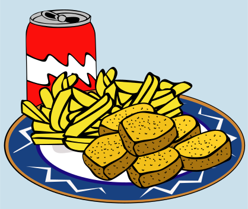
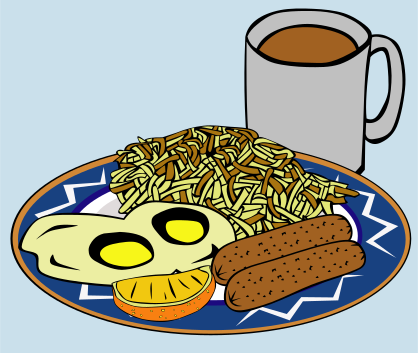
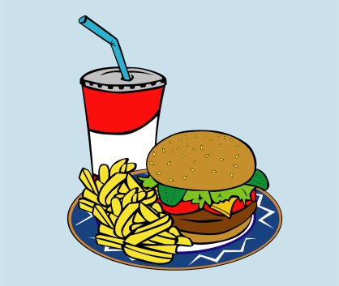

<div class='wraper'>
<div class='option' routerLink="/main" routerLinkActive="active">
  
  
  
  <span class='marg'>
  </span>
</div>
<div (click)='redirectTo()' class='option'>Dodaj przepis</div>
  <div class='searchBar'>
    <app-search-bar></app-search-bar>
  </div>
  <div class='return'>
    <mat-icon class='icoUndo' (click)='goBack()'>undo</mat-icon>
  </div>
</div>
